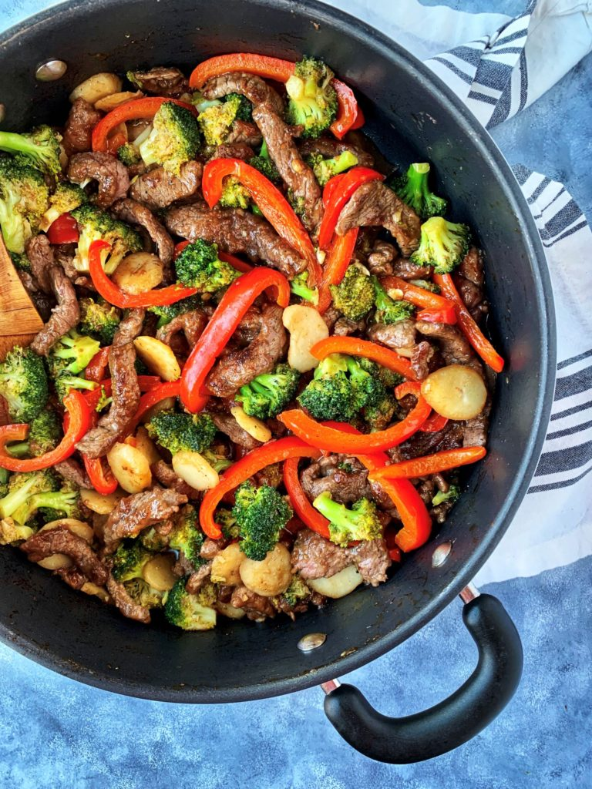

Stirfry

Description
Pan fried vegetables with your choice of meat.
Season with salt or any other sauce you enjoy.
Ingredients
- Sesame Oil
- Bell Peppers
- Cabbage
- Red Bell Peppers
- Onions
- Meat of your choice
- Salt & Pepper
Steps
- Heat up pan
- Cook meat until thoroughly cooked
- Add the rest of the vegetables. Cook until it has the texture of your choice
- Season with salt and pepper
- Place on plate